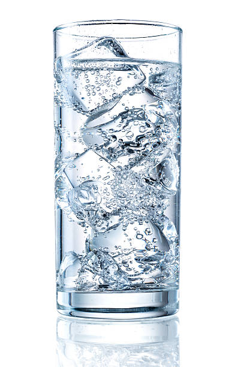

Glass of Water
It is imperative that you add this dish to your repertoire.
It can also be served with potatoes.
Ingredients
- Glass about 16.5 barleycorns tall
- Dihydrogen Monoxide (preferably at 43°F)
Steps
- Find the finest glass in your establishment/abode/home.
- Gently create an apparatus from which you can achieve laminar flow.
- Aggressively pour the water from your contraption into the fine glass.
- DONE! Enjoy :]
Links